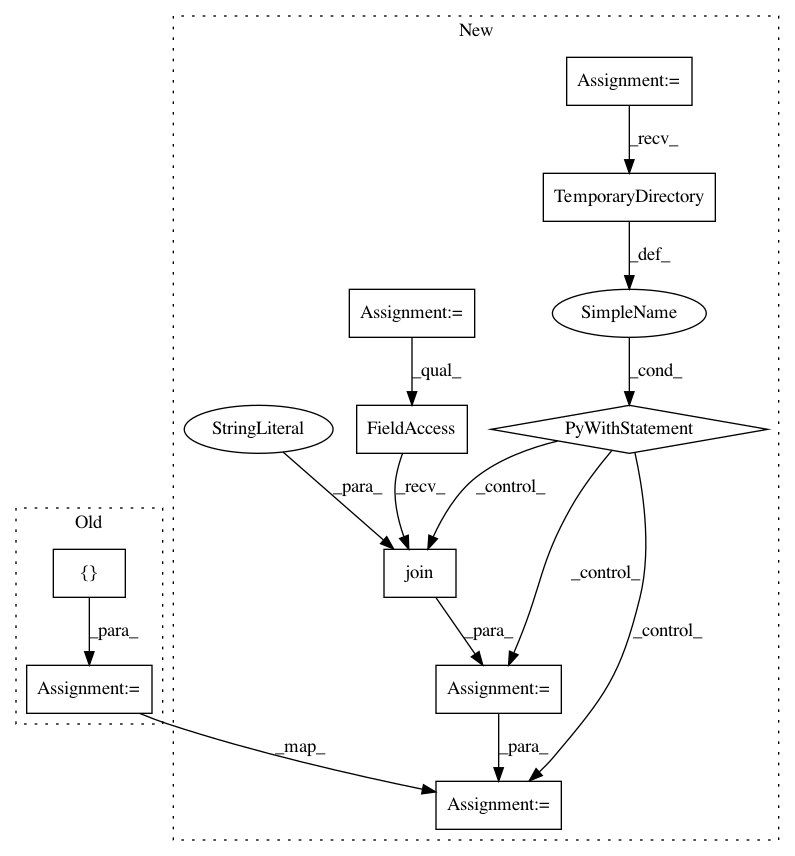

061a215e1898d7394930840065ce88f9b7884cb7,tests/test_pcap_reader.py,,test_sessionizer,#,30
Before Change
logger = logging.getLogger("test")
pcap_file_sessions = networkml.parsers.pcap.reader.parallel_sessionizer(
logger,
["tests/trace_ab12_2001-01-01_02_03-client-ip-1-2-3-4.pcap"])
binned_sessions = pcap_file_sessions.get(
"tests/trace_ab12_2001-01-01_02_03-client-ip-1-2-3-4.pcap", None)
assert binned_sessions is not None
first_session = binned_sessions[0]
packet_key = ("172.16.255.1:10670", "204.194.237.136:80")
first_data = first_session[packet_key][0]
timestamp, packet = first_data
assert packet is not None
assert isinstance(timestamp, datetime.datetime)
After Change
logging.basicConfig(level=logging.INFO)
logger = logging.getLogger("test")
pcap_file = "trace_ab12_2001-01-01_02_03-client-ip-1-2-3-4.pcap"
with tempfile.TemporaryDirectory() as tempdir:
pcap_path = os.path.join("tests", pcap_file)
pcap_file_sessions = networkml.parsers.pcap.reader.parallel_sessionizer(
logger, [pcap_path], csv_out_dir=tempdir)
binned_sessions = pcap_file_sessions.get(pcap_path, None)
// smoke test - can read session from pcap
assert binned_sessions is not None
first_session = binned_sessions[0]
packet_key = ("172.16.255.1:10670", "204.194.237.136:80")
first_data = first_session[packet_key][0]
timestamp, packet = first_data
assert packet is not None
assert isinstance(timestamp, datetime.datetime)
// read CSV version of sessions back in.
csv_file = networkml.parsers.pcap.reader.pcap_filename_to_csv_filename(pcap_file, tempdir)
binned_sessions_from_csv = networkml.parsers.pcap.reader.sessioncsv_to_sessions(csv_file)
first_session_from_csv = binned_sessions_from_csv[0]
// CSV version should be the same as read from pcap.
assert len(first_session) == len(first_session_from_csv)
for pcap_items, csv_items in zip(first_session.items(), first_session_from_csv.items()):
assert pcap_items == csv_items
In pattern: SUPERPATTERN
Frequency: 3
Non-data size: 10
Instances
Project Name: CyberReboot/NetworkML
Commit Name: 061a215e1898d7394930840065ce88f9b7884cb7
Time: 2020-01-16
Author: josh@vandervecken.com
File Name: tests/test_pcap_reader.py
Class Name:
Method Name: test_sessionizer
Project Name: eth-cscs/reframe
Commit Name: 9309248e39a17098f8b22e07e2f4924deb0fd1a1
Time: 2020-02-18
Author: manitaras@cscs.ch
File Name: unittests/test_cli.py
Class Name: TestFrontend
Method Name: test_checkpath_symlink
Project Name: ina-foss/inaSpeechSegmenter
Commit Name: fc730c7fdbf495715faf9a68325689ba73be059f
Time: 2020-05-09
Author: ddoukhan@ina.fr
File Name: run_tests.py
Class Name: TestInaSpeechSegmenter
Method Name: test_batch